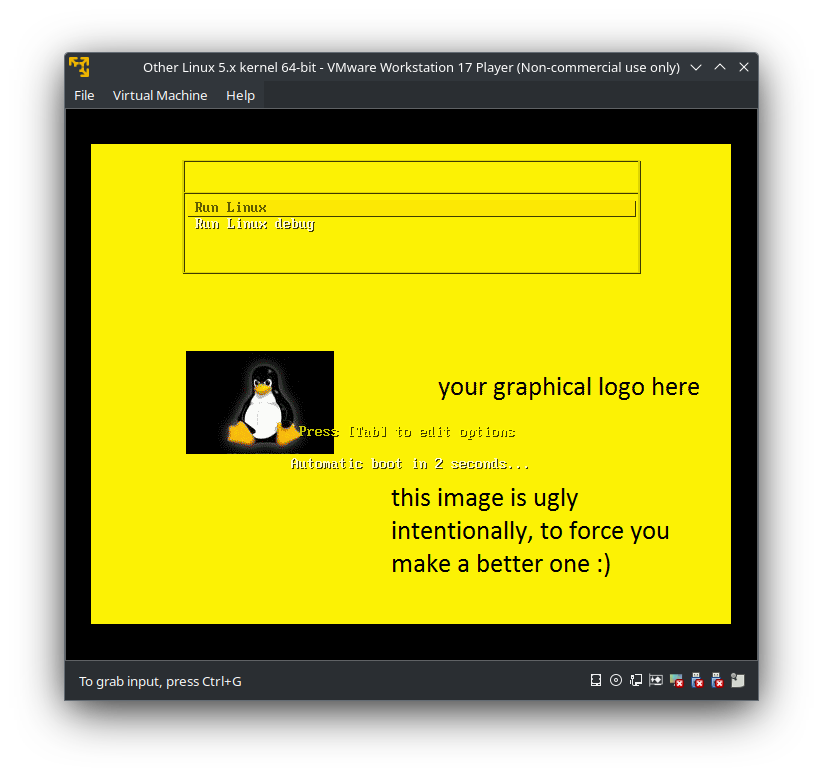
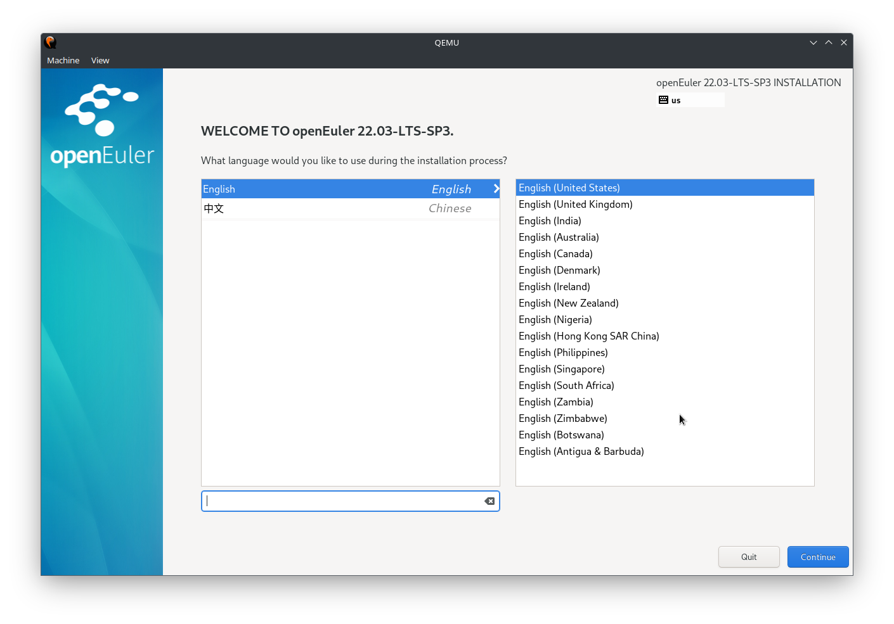
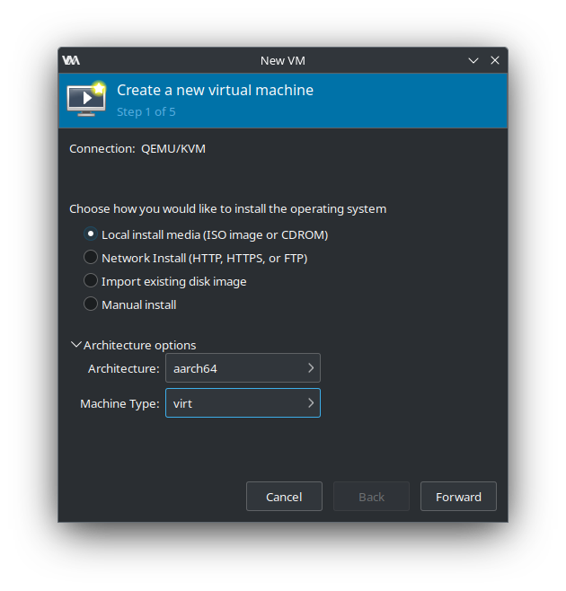
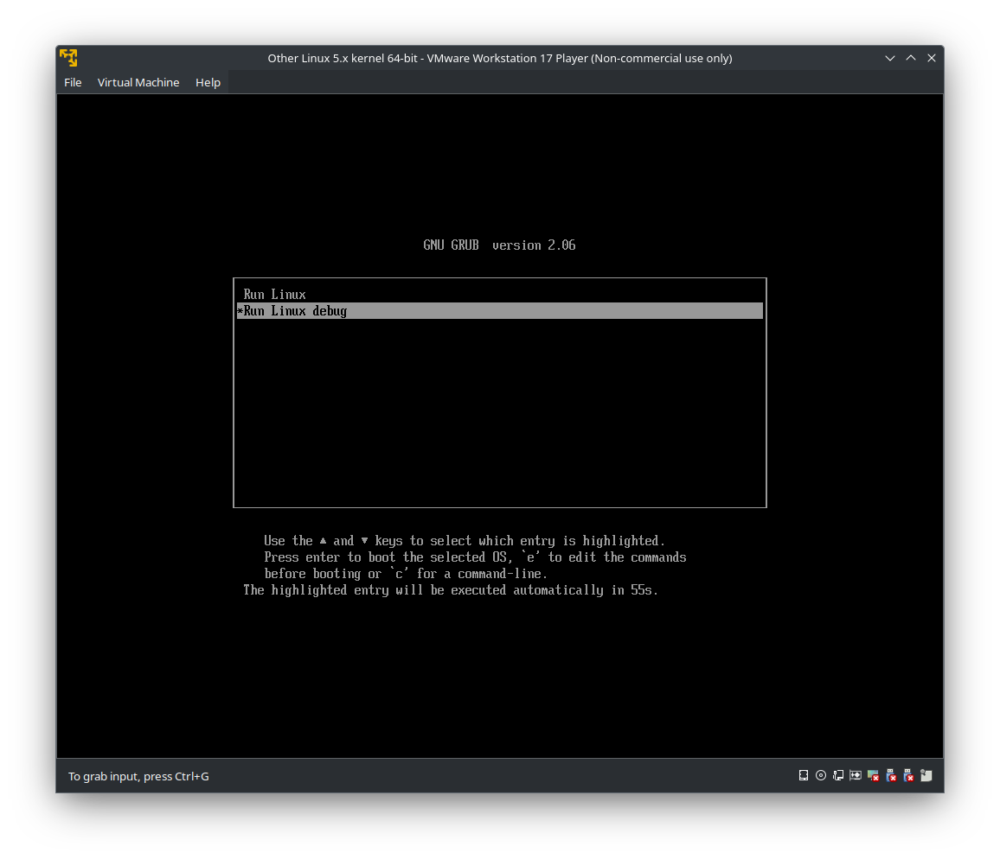

Recently I was working on a Linux Bare Metal Recovery releated requirement. Users should be allowed to use a customed Linux live CD to start a temporary Linux operating system that won’t make any changes to the storage, and then they can use the build-in tools to perform system recovery, e.g. using sfdisk to restore the volume/partition data and using GRUB toolchains to fix the startup items. Thus, we need to find a way to custom our a Linux recovery live CD firstly.
Due to I’m a newbie in such area, I googled about the Linux live CD and found there’s already some out-of-the-box images like Slax. However, it does not provide the feature customization kit so that does not meet our expectation. I searched linux live kit project from GitHub wishing to found a available solution. The projects are mainly some sorts of shell scripts to pack specified Linux distro into a ISO file.
I found the linux-live project by Tomas-M can pack any Linux system whose kernel supports squashfs , aufs and overlayfs into an live CD ISO image. All I need to do is just clone the project, make some configuration and run a script to produce the target ISO, which is quite simple and flexible. Here’s the steps in detail:
clone the project to a directory that won’t be packed latter, for example
/opt.$ cd /opt && git clone https://github.com/Tomas-M/linux-live.git
edit the
linux-live/configfile to filter which directories need to be packed:# Kernel file, will be copied to your Live Kit
# Your kernel must support aufs and squashfs. Debian Jessie's kernel is ready
# out of the box.
VMLINUZ=/vmlinuz
# List of directories for root filesystem
# No subdirectories are allowed, no slashes,
# so You can't use /var/tmp here for example
# Exclude directories like proc sys tmp
MKMOD="bin etc home lib lib64 libx32 root sbin srv usr var"use
find /boot | grep vmlinuzto find where the vmlinuz image is and create a/vmlinuzsymlink to that path:$ find /boot | grep vmlinuz
/boot/vmlinuz-0-rescue-2348d36f53074ace8b9850051a3d34b5
/boot/vmlinuz-5.10.0-182.0.0.95.oe2203sp3.x86_64
$ ln -s /boot/vmlinuz-5.10.0-182.0.0.95.oe2203sp3.x86_64 /vmlinuz
run
linux-live/buildscript, a temporary folder namedlinux-data-xxxcontainning data to be packed and two shell scripts that used to produce ISO or ZIP file will be generated to/tmp：$ tree /tmp
/tmp
|-- /linux-data-xxxx
|-- gen_linux_iso.sh
|-- gen_linux_zip.shrun
/tmp/gen_linux_iso.shand an ISO image/tmp/linux-x86_64.isowill be packed.
After the four simple steps are done, I created a new virtual machine in VMWare, attached this ISO image to virtual CD-ROM and chose to boot from CD-ROM. It works! A ugly boot background shows and the systems loads successfully!

However, several days later, I found that the ISO cannot boot on UEFI mode (the previous vm is booted from BIOS). What’s worse, the linux-live kit cannot build ISO image from aarch64 platform. I checked the build log and found it output error when executing initramfs_create. It fails because the build scripts require some pre-compiled binaries like busybox, eject, mkfs.xfs placed in directory initramfs/static. Thus, this kit won’t work on such case definitely without performing any modification to it! Now, to sum up, this live kit can only produce ISO image which works on x86_64 platform and support BIOS booting only, but our requirement is to build ISO image that works on both x86_64 and aarch64, and can boot from both UEFI and BIOS. I think, the binaries platform issue can solved by recompiling them on aarch64 platform, but the UEFI booting issue is really hard for me since I have no idea about how Linux boots from ISO!
I have written a blog How Linux Boots introducing how Linux boot from disk, but this time things got a little different as we are trying to boot from ISO image, or say, a optical disk.
ISOLINUX & GRUB
// isolinux is designed for ISO boot specificly



ISO9660 & El Torito
// iso8660 standard and El Torito boot
Build x86_64 EFI ISO image
// replace ESP image and El torito boot entry
// build hybrid CD
I downloaded a openEuler-22.03-LTS-SP3-x86_64-dvd.iso installation ISO file and mounted it as iso9660 filesystem to check it’s structure as followed:$ mkdir /mnt/sr0
$ mount -t iso9660 -o loop,ro openEuler-22.03-LTS-SP3-x86_64-dvd.iso /mnt/sr0
$ tree /mnt/sr0
/mnt/sr0/
├── EFI
│ ├── BOOT
│ │ ├── BOOTX64.EFI
│ │ ├── fonts
│ │ │ ├── TRANS.TBL
│ │ │ └── unicode.pf2
│ │ ├── grub.cfg
│ │ ├── grubx64.efi
│ │ ├── mmx64.efi
│ │ └── TRANS.TBL
│ └── TRANS.TBL
├── images
│ ├── efiboot.img
│ ├── install.img
│ ├── pxeboot
│ │ ├── initrd.img
│ │ ├── TRANS.TBL
│ │ └── vmlinuz
│ └── TRANS.TBL
├── isolinux
│ ├── boot.cat
│ ├── boot.msg
│ ├── grub.conf
│ ├── initrd.img
│ ├── isolinux.bin
│ ├── isolinux.cfg
│ ├── ldlinux.c32
│ ├── libcom32.c32
│ ├── libutil.c32
│ ├── splash.png
│ ├── TRANS.TBL
│ ├── vesamenu.c32
│ └── vmlinuz
├── Packages
├── Repodata
├── docs
We can see except the structure is rather clear:
/isolinuxshould contains the ISOLINUX bootloader used to enable this ISO image to boot on BIOS mode./Packagespacked many rpm package that may be used during the installtion./EFIcontains a hierarchy that look like a ESP partition./imagescontains some disk images.
It’s notable that and there’s a also image file named efiboot.img placed in /image. By using the file command to check the format of efiboot.img, we can discover it’s a image with vfat format.$ file /mnt/sr0/images/efiboot.img
/mnt/sr0/images/efiboot.img: DOS/MBR boot sector, code offset 0x3c+2, OEM-ID "mkfs.fat", sectors/cluster 4, reserved sectors 4, root entries 512, sectors 14336 (volumes <=32 MB), Media descriptor 0xf8, sectors/FAT 12, sectors/track 32, serial number 0xeaba75ff, label: "ANACONDA ", FAT (12 bit)
Also, I mounted it as a loop device to check what files it contains and got that it nearly process the similar file of /EFI.$ mkdir /mnt/efiboot
$ mount -o ro,loop /mnt/sr0/images/efiboot.img /mnt/efiboot
$ tree /mnt/efiboot
/mnt/efiboot
└── EFI
└── BOOT
├── BOOTX64.EFI
├── fonts
│ └── unicode.pf2
├── grub.cfg
├── grubx64.efi
└── mmx64.efi
4 directories, 5 files
$ tree /mnt/sr0/EFI
/mnt/sr0/EFI
├── BOOT
│ ├── BOOTX64.EFI
│ ├── fonts
│ │ ├── TRANS.TBL
│ │ └── unicode.pf2
│ ├── grub.cfg
│ ├── grubx64.efi
│ ├── mmx64.efi
│ └── TRANS.TBL
└── TRANS.TBL
3 directories, 8 files
So I compared the md5 checksum of these files and find the checksum all matched, this confirmed my hypothesis: the efiboot.img is simply a vfat image packed /EFI. I think the efiboot.img is used to simulate a ESP partition used for UEFI booting.$ find /mnt/sr0/EFI -type f | grep -v TBL | sort | xargs -i md5sum {}
bb78df58c62474ec8596fe0bfd89bab6 /mnt/sr0/EFI/BOOT/BOOTX64.EFI
c6a4d48acacf45900fe9c195ed87e13f /mnt/sr0/EFI/BOOT/fonts/unicode.pf2
50d210676c58844931553b79ad67870e /mnt/sr0/EFI/BOOT/grub.cfg
770f6e3f7985f749b26d8fbc306361a7 /mnt/sr0/EFI/BOOT/grubx64.efi
fa13822c2cea99f99b64d81b8ed51918 /mnt/sr0/EFI/BOOT/mmx64.efi
$ find /mnt/efiboot -type f | sort | xargs -i md5sum {}
bb78df58c62474ec8596fe0bfd89bab6 /mnt/efiboot/EFI/BOOT/BOOTX64.EFI
c6a4d48acacf45900fe9c195ed87e13f /mnt/efiboot/EFI/BOOT/fonts/unicode.pf2
50d210676c58844931553b79ad67870e /mnt/efiboot/EFI/BOOT/grub.cfg
770f6e3f7985f749b26d8fbc306361a7 /mnt/efiboot/EFI/BOOT/grubx64.efi
fa13822c2cea99f99b64d81b8ed51918 /mnt/efiboot/EFI/BOOT/mmx64.efi
So I copied the efiboot.img from the OpenEuler installation ISO to /tmp/linux-data-xxx/linux/boot in order to boot from this image. Then changed the boot entry from linux/boot/isolinux.bin to linux/boot/efiboot.img and packed the ISO image and reboot from it on UEFI mode again, the GRUB shell prompted succesfully!cd /tmp/linux-data-xxx && mkisofs -o "/tmp/linux-x86_64-efi.iso"
-v -J -R -D -N --hide-rr-moved -A linux -V linux \
-no-emul-boot -boot-info-table -boot-load-size 4 \
-b linux/boot/efiboot.img -c linux/boot/isolinux.boot .
This GRUB bootloader load the grub.cfg from /EFI/BOOT/grub.cfg so I created a directory /EFI/BOOT in the /tmp/linux-data-xxx and configure the grub.cfg in it as follows:set default="1"
function load_video {
insmod efi_gop
insmod efi_uga
insmod video_bochs
insmod video_cirrus
insmod all_video
}
load_video
set gfxpayload=keep
insmod gzio
insmod part_gpt
insmod ext2
set timeout=60
### END /etc/grub.d/00_header ###
search --no-floppy --set=root -l 'linux'
### BEGIN /etc/grub.d/10_linux ###
menuentry 'Run Linux Live' --class openEuler --class gnu-linux --class gnu --class os {
linuxefi /linux/boot/vmlinuz load_ramdisk=1 prompt_ramdisk=0 rw printk.time=0 apparmor=0
initrdefi /linux/boot/initrfs.img
}
menuentry 'Run Linux Live debug' --class openEuler --class gnu-linux --class gnu --class os {
linuxefi /linux/boot/vmlinuz load_ramdisk=1 prompt_ramdisk=0 rw printk.time=0 apparmor=0 debug
initrdefi /linux/boot/initrfs.img
}
This time GRUB will use kernel in /linux/boot/vmlinuz and the initrd in /linux/boot/initrfs.img to boot the Linux in UEFI mode. The hierarchy structure of the directory to be packed shoud be like:$ tree /tmp/linux-data-27494
/tmp/linux-data-27494
├── EFI
│ └── BOOT
│ └── grub.cfg
└── linux
├── boot
│ ├── bootinst.bat
│ ├── bootinst.sh
│ ├── bootlogo.png
│ ├── efiboot.img
│ ├── extlinux.x32
│ ├── extlinux.x64
│ ├── initrfs.img
│ ├── isolinux.bin
│ ├── ldlinux.c32
│ ├── libcom32.c32
│ ├── libutil.c32
│ ├── mbr.bin
│ ├── pxelinux.0
│ ├── syslinux.cfg
│ ├── syslinux.com
│ ├── syslinux.exe
│ └── vesamenu.c32
├── changes
└── modules
└── 01-core.sb
I repacked the ISO and reboot it, this time it works fine! However, this ISO image can only boot in UEFI mode while the origin one can can boot in BIOS mode. It will be much more convenient for users to be able to boot the linux live system in both BIOS and UEFI mode just using one ISO image, and almost all Linux distribution installation media can do that, so it’s fessible to make one such ‘hybrid’ CD. By reading the document of mkisofs I found that El Torito extention support multiple boot entry in one CD. By adding the -eltorito-alt-boot -no-emul-boot -e linux/boot/efiboot.img option we can create the hybrid CD that works in dual mode:cd /tmp/linux-data-xxx && mkisofs -o "/tmp/linux-x86_64-efi.iso"
-v -J -R -D -N --hide-rr-moved -A linux -V linux \
-no-emul-boot -boot-info-table -boot-load-size 4 \
-b linux/boot/efiboot.img -c linux/boot/isolinux.boot \
-eltorito-alt-boot -no-emul-boot -e linux/boot/efiboot.img .
Now, if you boot it in BIOS mode, it will use ISOLINUX as the bootloader, and if you choose to boot in UEFI, GRUB menu will show.
Support aarch64
A few days latter, I got the new requirement to custom Linux liveCD of aarch64 platform. All the operation above is performed on the platform of x86_64, It’s now known if it still works on aarch64. I installed an aarch64 OpenEuler enviroment and replay these procedures, the bad news is that the build script failed at initramfs_create call, the ‘exec format error’ prints when executing busybox in linux-live/initramfs/static. I checked the files in linux-live/initramfs/static and found all those precompile binaries provided by this linux-live kit like busybox are statically linked executable in format of ELF Intel 80386, which cannot be used on aarch64.$ find initramfs/static | xargs file
initramfs/static: directory
initramfs/static/blkid: ELF 32-bit LSB executable, Intel 80386, version 1 (GNU/Linux), statically linked, no section header
initramfs/static/mount.dynfilefs: ELF 32-bit LSB executable, Intel 80386, version 1 (GNU/Linux), statically linked, no section header
initramfs/static/mkfs.xfs.custom: ELF 32-bit LSB executable, Intel 80386, version 1 (GNU/Linux), statically linked, no section header
initramfs/static/xfs_growfs: ELF 32-bit LSB executable, Intel 80386, version 1 (GNU/Linux), statically linked, no section header
initramfs/static/mount.httpfs2: ELF 32-bit LSB executable, Intel 80386, version 1 (GNU/Linux), statically linked, no section header
initramfs/static/busybox: ELF 32-bit LSB executable, Intel 80386, version 1 (SYSV), statically linked, stripped
initramfs/static/ncurses-menu: ELF 32-bit LSB executable, Intel 80386, version 1 (GNU/Linux), statically linked, no section header
initramfs/static/mc: ELF 32-bit LSB executable, Intel 80386, version 1 (GNU/Linux), statically linked, no section header
initramfs/static/eject: ELF 32-bit LSB executable, Intel 80386, version 1 (GNU/Linux), statically linked, no section header
Some source of the executable like busybox and blkid can be found on Github while the others remain unknown. Thus, I need to delve into the source of this project to find out how this kit works, and recompile these binaries.
First, download busybox source code and build a statically linked busybox executable to replace the old one in linux-live/initramfs/static. If your want to use a cross compile toolchain to finish this step, you can refer to this tutorial : compiling busybox simple. You can also make it directly on a aarch64 environment.
After I read the initramfs_create script, I found the busybox is used to simulate the Linux common utils, these utils like /bin/ls, /bin/bash are all linked to /bin/busybox. I also noticed that the busybox can simulate blkid and eject too, and the remaining executables like xfs_growfs are not necessary so recompile busybox on aarch64 is enough. After replaced the busybox executable. I restart the build script and the ‘exec format error’ didn’t show anymore.
I use the newly produced aarch64 ISO to boot and nothing is bootable. It’s not suprising since there’s alse other platform-dependent binaries used in the kit that I haven’t replaced yet. It’s easy to think of: the bootloader. Since ARM archtecture doesn’t have BIOS boot, we can discard the ISOLINUX bootloader and use GRUB only. Just like how I did to add support to x86_64 UEFI mode before, I downloaded a openEuler-22.03-LTS-SP3-aarch64-dvd.iso and extract the efiboot.img to replace the previous one. Also, I modified the /EFI/BOOT/grub.cfg to fit the aarch64 platform as below:set default="1"
function load_video {
if [ x$feature_all_video_module = xy ]; then
insmod all_video
else
insmod efi_gop
insmod efi_uga
insmod ieee1275_fb
insmod vbe
insmod vga
insmod video_bochs
insmod video_cirrus
fi
}
load_video
set gfxpayload=keep
insmod gzio
insmod part_gpt
insmod ext2
set timeout=60
### END /etc/grub.d/00_header ###
search --no-floppy --set=root -l 'linux'
### BEGIN /etc/grub.d/10_linux ###
menuentry 'Run Linux Live' --class openEuler --class gnu-linux --class gnu --class os {
linux /linux/boot/vmlinuz load_ramdisk=1 prompt_ramdisk=0 rw printk.time=1 apparmor=0 video=VGA-1:640x480-32@60me rgbh console=tty0
initrd /linux/boot/initrfs.img
}
menuentry 'Run Linux Live debug' --class openEuler --class gnu-linux --class gnu --class os {
linux /linux/boot/vmlinuz load_ramdisk=1 prompt_ramdisk=0 rw printk.time=1 apparmor=0 debug video=VGA-1:640x480-32@60me rgbh console=tty0
initrd /linux/boot/initrfs.img
}
After these modification is done, I repacked the ISO and boot again, the GRUB menu shows! However, no display come to screen anymore. We have successfully load the bootloader, it seem that the kernel or initramfs have some problem durring the early boot stage. To check where got stuck, I need to use qemu to debug the early boot process.
If your are using ArchLinux, you just use sudo pacman -S qemu-full qemu-system-aarch64 virt-manager dnsmasq to install qemu and virt-manager. virt-manager is a nice user graphic interface for qemu that function like VMware to allow aarch64 operating system run on my x86_64 PC.
You can also build qemu from source:
build ninja
$ wget https://github.com/ninja-build/ninja/archive/refs/tags/v1.10.2.tar.gz
$ tar zxvf v1.10.2.tar.gz && cd ninja-1.10.2
$ ./configure.py --bootstrap
$ sudo cp ninja /usr/binbuild qemu
$ mkdir build && cd build
$ sudo mkdir -p /usr/local/qemu
$ ../configure --enable-virtfs --target-list=aarch64-softmmu,arm-softmmu --prefix=/usr/local/qemu
$ make -j16
$ sudo make installadd /usr/local/qemu/bin to
$PATH
If you encountered the error “Failed to connect socket to ‘/var/run/libvirt/libvirt-sock’”, check if
libvertdservice is started.
configure the qemu network, create a network card on host:$ sudo ip tuntap add dev tap0 mode tap
$ sudo ip link set dev tap0 up
$ sudo ip address add dev tap0 192.168.2.128/24
$ ifconfig
tap0: flags=4099<UP,BROADCAST,MULTICAST> mtu 1500
inet 192.168.2.128 netmask 255.255.255.0 broadcast 0.0.0.0
ether 8a:3c:1a:1f:cc:6d txqueuelen 1000 (Ethernet)
RX packets 0 bytes 0 (0.0 B)
RX errors 0 dropped 0 overruns 0 frame 0
TX packets 0 bytes 0 (0.0 B)
TX errors 0 dropped 0 overruns 0 carrier 0 collisions 0
$ qemu-system-aarch64 -m 2000 -cpu cortex-a72 -smp 8 -M virt \ |